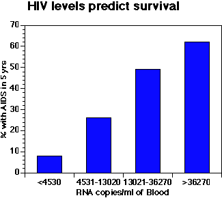
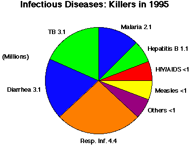

The Biology Project > Cell Biology > PEV > Viruses
Prokaryotes, Eukaryotes, & Viruses Tutorial
Viruses
Basic characteristics of viruses| Simply stated, viruses are merely genetic information surrounded by a protein coat. They may contain external structures and a membrane. Viruses are obligate intracellular parasites--meaning that they require host cells to reproduce. In the viral life cycle, a virus infects a cell, allowing the viral genetic information to direct the synthesis of new virus particles by the cell. There are many kinds of viruses. Those infecting humans include polio, influenza, herpes, smallpox, chickenpox, and human immunodeficiency virus (HIV) causing AIDS. |
|
 Molecular studies of HIV have led to the development of drugs that interfere with viral biology. Taking a combination of three drugs, indinavir, zidovudine, and lamivudine caused 85% of patients to have no detectable virus in their blood. Data being collected will show if these and other drugs will make AIDS treatable.
 |
The Biology Project > Cell Biology > P.E.V. > List of Problems
The Biology
Project
Department of Biochemistry and Molecular Biophysics
University of Arizona
April 1997
Revised: August 2004
Contact the Development Team
Department of Biochemistry and Molecular Biophysics
University of Arizona
April 1997
Revised: August 2004
Contact the Development Team
http://biology.arizona.edu
All contents copyright © 1997 - 2004. All rights reserved.